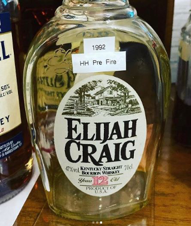

Recap: Third Annual Christmas Party
It was this time last year where Brian and I looked at each other and thought: "How will we ever top that Christmas Party?" And here we are at the end of 2019, and once again I'm thinking: How will we ever top THAT?? True to form, this was an evening for the record books where the bar was set even higher. Here's some of the major, safe for work, highlights!
Next year, the DBC will be picking a Colonel EH Taylor Single Barrel as our charity bottle
We collected 395 pounds of canned food for the North Texas Food Bank
We raised $7,000 for Dallas Habitat for Humanity
The Evening's Big Winner: Shawn Z aka Mr Stagg. Not only did Z win the 1964 George T Stagg, he won a 2018 George T Stagg which was promptly opened and enjoyed among the members.
It was fantastic getting together and meeting everyone's significant others. Our get togethers really help cement us as a group focused on events: yes Facebook and emails are cool, but getting together in person and enjoying some whiskey is what it's really about. We've got a really neat group of people here and it's been nothing short of astounding to watch these friendships blossom and grow over the years.We continue to grow this organization the right way: adding whiskey lovers who enjoy meeting other whiskey lovers.
So enough with the blah blah. Let's talk about the whiskey. Because there was PLENTY of amazing whiskey up on the big bar. As you can see, people had options. And all options were good ones. I got to enjoy some great stuff that I've had my eye on: New MGP Remus bourbon, Heaven Hill's new Bonded Bourbon as well as some old stuff I thought I would never see again: like the absolutely DIVINE 2018 OWA pick from Lakewood.
But what blew me out of the water was a 1992 Elijiah Craig 12 year old bourbon. And for those that don't know, that whiskey pre-dates the great fire at Heaven Hill. It was my first experience having anything HH pre-fire and my goodness: the hype is real. That was one of the most unique flavor profiles that I've ever had the privilege of enjoying. A huge nod of appreciation and bourbon pinache to the great Aaron Konen for this sublime treat.
Of course that does not discount any of the great whiskey that was shared. We had Maker's Mark 101, the new outrageous Baker's 13, we had a 2015 William LaRue Weller, and as soon as I hit the door I was handed a Blanton's Straight from the Barrel from Jason...Our Christmas Party is truly a whiskey lovers dream and the only reason it is so special is because of this group and their generosity. So Cheers to that!